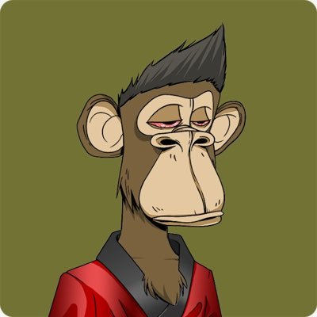

御坂 O.o 雪春📕 （雪似梅花）
@0502railgun1949
RT @KKaWSB: 1996年的今天，地球上最有名的人走进了里约热内卢最危险的角落。
迈克尔·杰克逊要拍一支MV。歌名本身就是一句控诉：《They Don't Care About Us》——他们根本不在乎我们。
这首歌直指种族歧视、贫富悬殊、警察暴力。他拒绝在好莱坞搭…

KK.aWSB
@KKaWSB
1996年的今天，地球上最有名的人走进了里约热内卢最危险的角落。
迈克尔·杰克逊要拍一支MV。歌名本身就是一句控诉：《They Don't Care About Us》——他们根本不在乎我们。
这首歌直指种族歧视、贫富悬殊、警察暴力。他拒绝在好莱坞搭景，选择了导演斯派克·李的方案：去巴西真实的贫民窟拍。 https://t.co/xbysNJgIWl